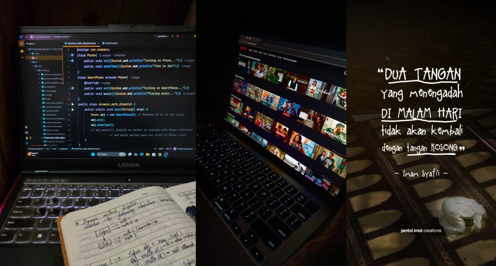

Mahasiswa PSTI yang baik hati dan tidak sombong wkwk. Orang lain bilang aku aneh si,
karna suka nyatuin bahasa sunda dan indo, kaya 'dengein', 'dagoin',dll ehehe tapi aku tetep baik hati kok sumpah.
Aku anak bungsu dari 5 bersaudara, jadi yang sabar aja ya klo ngomong sama aku, soalnya aku keras kepala xixixi.
kenalan lebih deket sama aku!.
Makanan Kesukaanku
Berikut beberapa makanan kesukaanku, jadi kalo kerumah jan lupa bawa yak hwehwehwe
1 : Prekedel Kentang
Salah satu temen nasi yang paling aku sukaaaaaa buangetttt, apalagi klo dicocol sambel,
dan dihidangkan dengan nasi yang panass, BEUHHHH idup serasa di surga wkwkw
2 : Makanan Pedas
NAHHHH INI WAJIB BANGETTT SII, soalnya makanan ini adalah makanan yang aku butuhkan
ketika aku sudah cape dengan SEMUANYA Nah bwt recharge nya itu dengan makannn ini eheheh
3 : Makanan Manis
NAHHHH INI JUGA SAMA WAJIB NYA TAWUK, makanan ini adalah makanan yang saya butuhkan untuk
menemani aku mengerjakan tugas, karna menurut aku selain belajar itu harus fokus, harus ada juga asupan
agar terus SEMANGATTT
Hobi

Belajar pemrograman
Inilah alsan mengaPA saya masuk ke jurusan PSTI, karna suka sekali dengan bahasa pemrograman,
Yaaaaa meskipun susah, dan sedikit tidak faham...yang namanya suka? ya bakal terus diusahain lahk xixixi
Menonton film action
Nahh klo ini aku lakuin pas lagi santai aja, pas tugas udah beres semua, gk ada kerjaan sama sekali dll,
tapiiiii kadang-kadang aku juga suka nonton sepintas siii, bwt tenangin pikiran dikala gk ada uang wkwkw
(soalnya makanan manis, dan seblak kan harus beli)